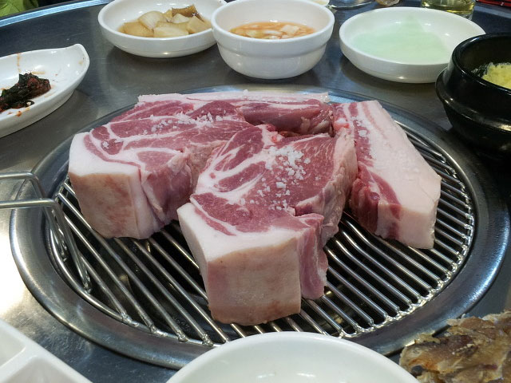

도보코스
애월밭담 도보코스
하가연못
하가리는 제주시 서남쪽 19㎞에 있다. 애월읍사무소에서 동북쪽의 신엄리와 서북쪽의 고내리 사이의 일주도로(속칭 자운당)에서 1.5㎞ 지점에 위치한 마을로 동으로는 신엄리, 서쪽으로는 상가리, 남쪽으로 한라산을 한 눈에 바라볼 수 있고 북서쪽에 고내봉이 인접해 있는 100여 호가 옹기종기 모여 살고 있다. 마을의 역사를 말해주는 해묵은 팽나무, 제주에서 가장 큰 12,483.9㎡의 연화못이 있어 여름이면 연꽃이 만발하는 사진촬영 장소이기도 하다. 연화못 바로 옆에 위치한 장지동산은 수령 400~500년으로 추정되는 소나무와 팽나무가 한데 어우러져 여름철이면 주민들의 휴식처로 유명한 곳이다. 전설에 따르면 고려왕조 25대 충렬왕(1275∼1309년) 때에 마을 연화지에는 야적(野賊)들의 집터로서 연못 한가운데 고래 등 같은 기와집을 짓고 이 연못에 달린 작은 못 가운데 하나인 샛물통에는 작은 초막을 지어 살면서 이 마을을 지나는 행인들을 농락하고 재물을 약탈하는 일이 빈번했다고 한다. 그러던 중 신임판관이 초도순시가 있을 때 이곳을 지난다는 정보를 입수한 야적들은 판관 일행을 습격할 음모를 꾸미고 있었는데 이 마을에 사는 ‘뚝할망’이 눈치채어 야적들의 흉계를 관가에 알렸으며 이에 관군이 출동하여 야적들을 소탕하는 과정에서 ‘뚝할망’도 야적들의 칼에 맞아 죽었다. 그러자 관가에서는 할머니의 충정심을 높이 기려 벼슬을 내리고 제주향교의 제신으로 받들게 했다고 한다. 그 후 움푹 패인 야적의 집터는 소와 말이 물을 먹이는 못으로 활용됐는데 17세기 중엽 대대적인 수리 공사를 하여 지금의 식용연이 있는 못은 식수로, 큰못은 우마급수 및 빨래터로 샛통은 나물을 씻는 용도로 뚝을 쌓아 지금에 이르고 있다고 전한다. 또, 이 연못에는 언제 심어졌는지 자세한 기록은 없으나 19세기 중엽 제주목사 한응호가 지방 순시중 이곳에 들러 연꽃잎으로 술을 빚어 마시고 시를 읊었으며, 양어머니로 하 금 연꽃을 지켜 가꾸도록 했다는 유래로 봐서 연꽃의 전래시기가 그 당시인 것으로 보고 있다. 연하못에는 식용연꽃과 수련이 자라고 있으며 한때는, 수련도 빨간색 꽃잎이 피는 적수련과 백색꽃이 피는 백수련, 노란꽃이 피는 황수련이 있었으나 관리 소홀로 적수련만이 남아 있으며, 식용연꽃의 종자는 발아 능력이 106년이나 간다고 알려지고 있다. 현재 연하못 가운데 육각정(六角亭)이 있는데 육각정 기초공사 시 뻘 속에서 고려시대에 제작된 것으로 추정되는 목재와 기와가 발견되어 연화못의 역사를 뒷받침 해주는 자료로 삼고있으며 못 가운데 육각정과 장지동산의 고목 과 연계되는 장관은 하가일경으로 일컬어지고 있다.
상세보기더럭분교
애월초등학교 더럭분교의 전신은 1936년부터 1942년까지 초등학교에 입학하지 못한 아동들을 교육시키기 위하여 설립된 신성개량서당으로 하가리 향사에 만들어졌다. 이어 광복 직후 하가리 주민들이 앞장서 1946년 9월 1일 설립 인가를 하가공립국민학교로 개교했다. 1949년 2월 5일 4.3사건으로 인하여 교사가 소실되었으나 학구민의 노력으로 1950년 복구되었다. 1954년 6월 주민들의 요청으로 더럭국민학교로 개칭하기도 했다. 한때는 학생 수가 감소, 30여명이 불과하며 통폐합 위기까지 처했으나 지금은 학생 80여명이 다니는 학교로 발전했다. 무지개학교라는 이름으로 전국에서 관광객이 몰리면서 학교보다는 관광명소로 더 잘 알려져 있다. 이 과정에서 삼성전자가 기획하고 세계적 컬러리스트인 프랑스의 장 필립 랑클로(Jean Philippe Lenclos)가 참여하여 학교교사를 재단장, 휴대폰 광고에 등장하면서 전국적으로 유명세를 탔다. 넓은 잔디 운동장과 낮은 단층 건물에 알록달록 색이 입혀진 학교는 동화책에서 막 튀어나온 입체 조형물 같다. 본관 건물뿐 아니라 음수대와 급식실, 심지어 쓰레기장까지 다채로운 색으로 갈아입은 모습이 무척이나 아름답다. 특히 교사(校舍) 중앙에 위치한 두 그루의 벚나무가 만개하는 봄이면 컬러플한 교사 校舍) 그리고 초록으로 물들기 시작한 운동장과의 환상적인 모습을 연출한다. 요즘 더럭 분교는 많은 사람들의 방문으로 수업의 지장을 우려해 수업 중에는 방문이 불허되고, 평일은 오후 6시 이후, 토요일은 오후 1시 이후 그리고 일요일과 공휴일은 전일 방문이 허용된다.
상세보기서학당 터
서학당은 1834년 봄에 한응호는 상가리에 설립하고 유림 자제들에게 경전과 시문을 교육했던 곳이다. 그러나 1846년 2월에 이인식 방어사가 온 후 남, 서, 우 3학당은 혁파되어 버렸다. 1848년 3월에 장인식 방어사에 의해 1949년에 다시 서학당 문을 열고 학업을 계속토록 했다. 그러나 1871년 3월에 편액서원 47개 처를 남기고 나머지는 대원군에 의하여 모두 철폐시켜 버렸다. 상가리 소재 서학당은 제주도내 4개 학당 중 유일하게 유적으로 「한응호 흥학비」를 소중하게 보존하고 있어 향토사 연구에 중요한 사료가 되고 있다.
상세보기샘
제주의 마을들은 바닷가에 집중돼 있다. 이는 바닷가가 먹거리가 풍부하다기 보다는 물을 구하기 쉽다는 이유가 첫 번째였다. 물이 귀한 제주에서 대부분의 샘이 바닷가 근처에서 용출, 샘을 형성하기 때문이다. 그만큼 제주에서 물을 구하는 것은 생존과 직결된 필수불가결의 요소다. 옛 제주의 선인들에게 있어서 샘은 신이 존재하는 곳으로 인식돼 왔다. 그 만큼 물이 귀했기 때문에 생겨난 현상으로 옛 제주의 선인들은 샘을 얼마나 신성시 했는가를 느끼게 해주는 대목이다. 현재 남아있는 대부분의 샘 형태를 보면 물이 용출하는 곳을 중심으로 바닥에는 평평하게 다듬은 을 깔고, 그 둘레에 돌담을 쌓아 울타리를 조성한다. 이때 식수로만 쓰이는 경우는 단독으로 샘의 형태를 하고 있는데, 만약에 수량이 풍부할 경우 몇 단으로 나눠 차례대로 식수용, 야채를 씻는 곳, 빨래를 하는 곳 등으로 구분하기도 한다.
상세보기올레
올레는 마을 안길에서 집의 대문격인 정낭까지 이어지는 공간으로서 길 양옆을 돌담으로 쌓아 놓은 것이다. 보통 구불구불 곡선으로 이어지는 것이 보통인데 이는 바람의 영향을 분산시켜 그 힘을 약화시키는데 목적이 있다 마을과 집안을 연결하는 올레는 그 연결매체로서 담에 의하여 형상화된다. 즉 좌우로 돌담을 쌓아올려 긴 골목을 만들고 있다. 그리고 올레는 마당에 이르기까지 다양한 경관의 변화를 거치게 되는데, 먼저 도입부로 거릿길에서 집으로 들어오는 목의 첫머리를 이르는 올레어귀와 거릿길에서 집으로 들어오는 길목 안쪽에 세운 대문인 올렛문 등으로 나누어 다. 올레의 입구를 어귀라 부르는데 올레 어귀에는 외부와 집안을 뚜렷하게 구분 짓는 지방돌이 가로로 땅바닥에 박힌다. 어귓돌은 큰 자연석으로 담이 시작하는 맨 끝의 밑에 놓이는 돌이다. 어귓돌은 여기서부터 민가의 입구가 시작됨을 암시해 주는 기능을 지니고 있다. 몰팡돌이 놓이는 경우도 많다. 올레를 통해 하나의 집만이 존재할 경우 올레 초입에 정낭이 세워지기도 한다. 정주석과 정낭은 원래 마소가 출입하지 못하게 하기 위해서 만든 시설이지만 나중에 걸쳐놓은 정낭의 숫자를 갖고 주인의 출타범위를 안내하는 기능으로 발전했다. 즉 3개가 가로 놓였을 때는 주 이 멀리 출타했다는 의미로 그리고 그 숫자가 적어질수록 출타의 거리는 가깝다는 것을 의미하는 상징성까지 담고 있다. 또한 올레 어귀에는 멀구슬나무를 심는 예가 많았다. 멀구슬나무는 빨리 성장하는 반면 그늘이 좋아 올레어귀에 사람이 모이게 하는 작용을 하기도 했는데 댓돌을 만들거나 팡돌이 놓여 있어 이곳에서 휴식을 취하기도 한다. 올레 어귀에서 민가 쪽으로 들어가면서 올레 바닥의 양 옆에는 다리팡돌이 설치된다. 이것은 비가 올 때 신발에 흙이 묻지 않고 걷도록 한 것이다. 잘 다듬어진 돌을 설치함으로써 거친 올렛담을 깔끔하게 정리하는 효과까지도 담고 다. 올레의 길이와 관련해서는 1가구 단독의 올레인 경우 그 길이가 상대적으로 짧고 하나의 올레에 3-4가구 이상이 밀집된 경우 그만큼 길어진다. 올렛담의 높이는 1.2-2.1m 정도가 대부분인데 올렛담 너머에 밭이나 다른 집의 우영이 있는 경우 상대적으로 낮고, 올렛담 바로 옆으로 다른 집이 위치한 경우에는 성인의 키 높이보다 더 높은 경우가 많다. 이는 밖에서 집안이 보이지 않도록 하려는 의도에서 비롯된 독립성 보장 측면이 강하다. 올레의 형태는 I형, L형, S형 등 다양한데 대부분의 올레는 직선보다는 곡선 형태를 띠고 있다. 특히 안거리의 정면을 비끼도록 여, 곧지 않으며 끝부분이 구부러져 있다. 이는 집주인에게는 외부로부터 시선을 차단하여 독립적인 공간을 확보하여 주고, 이 집을 방문하는 사람에게는 집주인과 단번에 마주치는 상황을 배제하는 전이공간의 역할을 한다.
상세보기고내봉
일주도로변 애월고등학교 동남쪽에 위치한 오름으로 높이는 해발 175ｍ이다. 크고 높은 주봉을 중심으로 3개의 봉우리로 이루어져 있으며, 주봉 서쪽이 방애오름, 남쪽이 진오름, 남서쪽 공동묘지가 조성되어 있는 것이 너분(넓은)오름이라고 따로 불리고 있다. 오름을 돌아가며 산줄기가 뻗어내려 그 가장자리 마다 잡목이 우거지고 골들이 패어 있는 복합형 화구를 이루고 있으며, 오름 말물동산 중턱에 보광사라는 절이 있고, 정상부의 공동묘지를 출입하는 포장도로가 오름정상 가까이까지 개설되어 있다. 또한 이 오름은 2종류의 구성 물질로 이루어진 매우 드문 형태의 오름 로도 유명하다. 바다 쪽 오름 북사면과 그 골짜기에는 수중화산 쇄설성 퇴적층의 노두(路頭) 단면이 잘 발달되어 있다. 화산 활동 때 해안 가까이에서 분출된 관계로 암반지대와 설덕이 많고, 동쪽 해안은 단애가 형성되어 있으며, 서쪽은 사면암초의 해안을 이루고 있다. 주봉꼭대기에는 조선시대 때 봉수대를 설치했던 흔적이 있는데, 이 봉수는 북동으로 수산봉수, 남서로 어도오름과 교신했었다고 한다. 고내 봉수는 애월진에 소속되어 동쪽으로는 수산봉에 응신하고 서쪽으로는 어도봉에 응신하였다. 여기에는 별장 6명과 봉군 24명이 배치되었었는데 4교대로 24시간을 경비 였다. 이때 당번에 당하는 사람을 망직이라 하였다. 또 봉수의 경비를 조달하기 위하여 토지를 주었는데 고내리에 앞관전 등은 이와 같은 토지이다. 이 오름은 전사면에 해송이 주종을 이루는 숲으로 구성되어 있으며, 주봉까지는 산책로가 가꾸어져 있다. 고내리 경내에는 넓은 평지는 없고 군데군데 설덕 사이에만 경작지들이 있을 뿐이며 취락이 형성된 고내마을은 고내봉으로 인하여 한라산이 보이지 않는 마을이다.
상세보기겹담
돌담의 형태는 크게 외담과 겹담으로 나눌 수 있다. 외담은 한 줄로 차곡차곡 올려 쌓은 돌담이고, 겹담은 담장의 폭을 넓게 해서 쌓은 돌담의 형태를 말한다. 겹담에는 다시 백켓담, 잣길, 잣벡 등으로 구분하기도 한다. 겹담은 외담의 반대 개념으로 맨 아랫부분에는 작은 돌로 빈틈없이 여러 겹 쌓아올린 후 그 위에 큰 돌로 쌓는 백켓담, 양옆을 굵은 돌 두 줄을 쌓고 그 사이에 잡석을 채워 넣는 산담 양식, 그보다 더 넓은 면적에 자갈 등을 쌓아올려 그 위로 사람이 걸어 다닐 수 있도록 만든 잣길 또는 잣벡 등이 있다. 겹담은 대체로 돌이 많은 지역에서 볼 수 있는 식이다. 밭주인이 잡석을 모두 처리하는 용도로 넓게 쌓은 잣벡 등은 훗날 안쪽에 위치한 밭 소위 맹지(진입로가 없는 밭)에서는 통로로 이용하기도 했다.
상세보기돌담의 효과 범위
제주에서 돌담은 남태평양에서 시작되는 제주의 강한 바람으로부터 농작물을 보호하고 흙이 날리지 않도록 하여 밭의 기능을 유지시키는 한편 농부들이 밭일을 할 때 추위를 막아내는 역할까지도 돌담의 몫이었다. 간혹 면적이 넓은 밭을 보면 경계지점이 아닌 밭 가운데로 끝까지 이어지지 않은 돌담을 쌓은 경우를 보게 된다. 밭의 가장자리에만 돌담을 쌓을 경우 바람을 막아내는데 한계가 있기 때문에 중간에 다시 돌담을 쌓았다는 얘기다. 결국은 돌담이 어느 정도의 바람을 이겨낼 수 있는지를 오랜 경험을 통해 터득했다는 얘기다. 제주의 밭들이 필지 당 경지면적이 그리 지 않은 것도 이와 무관하지 않다. 그런데 한 필지의 밭 가운데 별도로 돌담을 쌓는 경우가 비단 바람의 세기를 완화시키려는 이유 뿐만은 아니다. 좁은 면적의 밭에도 가운데 돌담을 쌓은 모습을 어렵지 않게 볼 수 있는데 바로 농경지의 유실을 방지하기 위함이다. 즉 경사진 밭에서 많은 비가 내릴 경우 흘러든 물로 토양이 유실되거나 낮은 방향으로 흙과 재배작물이 밀리는 현상이 있는데 이를 방지하기 위해서라는 얘기다. 특히 모래가 많이 함유된 토양이거나 경사가 심한 경우에는 더더욱 그 피해가 커진다. 때문에 밭을 계단식으로 조성, 그 피해를 없애자는 의도에서 밭 가운데에 돌담을 쌓은 경우도 있다.
상세보기오름과 산담
제주도 무덤양식이 육지부와 구별되는 가장 큰 차이점인 산담이다. 산담은 무덤 주위를 타원형으로 쌓거나 장방형으로 쌓은 돌담을 말한다. 타원형의 산담은 장사 치르는 당일에 쌓는 담으로 합 겹으로 쌓는 외담형식이다. 경우에 따라서는 깊은 산중에서 돌을 구하기가 힘들어 외담으로 쌓는 경우도 있다. 후손들이 제대로 날짜를 잡아 산담을 조성할 경우는 양쪽에 커다란 돌을 쌓은 후 그 사이에 작은 돌을 채워넣는 겹담양식으로 만드는데 시문(神門)이라는 신의 출입문, 즉 제삿날 자손들이 차려주는 음식을 먹기 위해 후손의 집을 찾아올 때 출입하는 문을 만든다. 그렇다면 산담은 왜 쌓았을까. 먼저 산담은 영혼의 영역을 나타내는 일종의 경계구실을 하고 있다. 출입문인 시문까지 만들어 놓았다는 점에서 쉽게 짐작해 볼 수 있다. 그리고 제주도 중산간 대부분이 방목지대인 특성을 고려할 때 소나 말의 침입을 막을 수 있고 또한 화입(火入)이라 하여 들불을 붙일 때 산불이 무덤으로 들어오지 못하게 하는 구실도 해 준다. 그리고 무덤 앞에 사이좋게 마주 서있는 동자석이 있다. 한마디로 무덤을 지키고 조상을 섬기는 석상이다. 넓게는 하늘과 땅을 연결시키는 의미와 지신의 의미까지도 함축하고 있는데 그 기능을 살펴보면 숭배적 기능, 봉양적 기능, 수호적 기능, 장식적 기능, 주술적 기능, 유희적 기능 등이 있다. 이러한 기능들을 종합하면 제주에서 사람이 죽으면 한라산 또는 오름으로 돌아가 신선이 된다. 는 내세관과 연관이 있는데, 이때 신선을 모시는 동자를 나타내는 석상이라 할 수 있다. 이렇게 보면 동자석에는 한라산과 오름을 숭배하는 무속과 도교, 불교적 요소가 복합적으로 섞여있다고 할 수 있다.
상세보기송이로 이뤄진 밭
과오름은 표고가 155m이고 비고가 85m이다. 일찍부터 ‘과오름’이라 하고, 한자로 곽악(郭岳)이라 했으며, 곽지악으로 표기되기도 한다. 과오름은 남쪽에 있는 주봉에서 서북쪽으로 뻗어 내린 산세로, 세 개의 봉우리로 이루어져 있다. 오름 주변에는 농경지들이 조성되어 있는데, 특히 이곳의 밭을 보면 붉은색을 띠고 있다. 화산 분출과정에서 형성된 송이, 즉 스코리아(scoria)로 덮여 있기 때문이다. 화산쇄설물의 일종인 송이는 특유의 외형을 갖지는 않지만 다공질의 내부구조를 가지며, 검은색, 암갈색 등으로 나타난다. 화산쇄설물은 화산폭발에 의하여 지표에 분출, 집 된 물질을 말하는 것으로 제주도에서 부석이라고 물에 뜨는 돌이라며 파는 것이 이것이다. 송이는 제주도의 중요한 자원으로 평가된다. 화산섬인 제주도 오름 대부분이 이러한 화산분출물인 송이로 이뤄졌다. 예전에 송이는 별다른 주목을 받지 못했으나 지금은 귀중한 보존자원이 됐다. 송이가 갖고 있는 다양한 기능과 성분 때문이다. 무엇보다 송이층은 제주 지하수에 있어서는 없어서는 안 될 중요한 요소다. 비가 내릴 경우 화산재로 이뤄진 송이층을 통과하면서 물을 정화시키는 기능을 하기 때문이다. 제주 삼다수가 오늘날 생수시장의 대표적인 브랜드로 성장하고 있는 것도 송이가 있어 가능했다고 해도 틀린 말이 아니다.
상세보기머들
제주에서 돌담은 농경생활의 시작과 함께 생겨났을 것이라는 추정되고 있다. 왜냐하면 농경을 하기 위해서는 돌로 뒤덮인 밭을 개간해야 하는데, 이때 걷어낸 돌덩어리들을 처치해야 하는 문제가 발생한다. 이 돌들을 처치하는 방법으로 한편에서는 머들을 쌓고 다른 한편으로는 밭의 가장자리로 옮기게 된 것이 돌담이 시초가 아니냐는 얘기다. 농경이 시작된 이후 밭에 돌이 많다는 것은 그만큼 땅을 척박하게 만들어 농사를 짓는데 장애요인으로 작용하게 된다. 즉 밭에 씨를 뿌리려면 땅을 갈아엎어야 하는데 돌이 많으면 그만큼 작업이 힘들어지는 것이다. 밭의 구석진 곳에 을 쌓아 경작지의 잡석을 제거해 한 곳에 쌓았던 것이 ‘머들’이다. 결국 밭에서 나온 돌들은 일부는 돌담으로, 그리고 돌담으로 다 처리가 안 되면 밭의 일정 공간에 돌탑처럼 쌓아올려 처리한 것이 ‘머들’이다. 제주에서의 농경은 탐라국의 성립과 더불어 시작된 것으로 이야기할 수 있다. 삼성신화에 의하면 수렵생활을 하던 삼을라가 벽랑국의 세 공주와 만나 결혼을 하고 이후 탐라국으로 발전하는 과정을 보여주고 있는데 당시 세 공주가 송아지, 망아지와 더불어 오곡의 씨앗을 가지고 온 것으로 이야기되기 때문이다. 결국 탐라국 시대부터 돌담의 존재했다는 얘기다. 론 척박한 땅을 이겨낸 모습은 돌담 자체에서도 스며있다. 만약에 돌담을 이루고 있는 그 많은 돌들이 담장으로 이용되지 않고 밭 가운데 널려 있다면 어떻게 됐을까 생각하면 답이 나온다. 농사는 고사하고 사람들이 다니기에도 불편했을 것이다. 옛 제주 사람들이 얼마나 어려운 삶을 살았었나를 단적으로 보여주는 것이 돌담이라 말해도 과언이 아니다.
상세보기담굽
제주에서 돌을 쌓을 때는 먼저 잔자갈을 이용해 기반을 다진 후 굵은 돌을 그 위로 차곡차곡 쌓아올린다. 이때 바닥의 기초가 되는 층을 담굽이라 한다. 담굽은 돌담의 기반을 단단하게 다져 쉽게 무너지지 않도록 하는 용도와 함께 밭에 널려있는 잔자갈을 처치하는 용도까지 포함하고 있다. 만약에 굵은 돌부터 차례차례 쌓아올리면 잔자갈을 처리할 수 없게 된다. 또 물이 넘칠 때 흙이 쓸리면서 돌단의 기반이 무너지는 것을 방지하기도 한다. 비슷한 사례로는 마당 한 구석의 눌굽이 있는데, 소나 말의 사료와 장작 등 땔감을 쌓아 보관하는 눌의 바닥면에 돌을 이용해 기 을 만드는 것이다.
상세보기농로
제주도의 농로를 보면 도로보다 높게 돌담을 쌓아올린다. 도로보다 지대가 낮은 밭의 경우에도 도로보다 최소한 한 줄 이상 높게 돌담을 쌓아올린다. 이는 강수량이 많은 제주의 상황에서 도로에 물이 범람할 때 밭으로 넘치지 않도록 하기 위한 것이다. 그렇지 않을 경우 회산회토로 이루어진 밭의 특성상 토양이 농경지 유실 피해를 입을 수 있기 때문이다. 부득이한 경우 밭의 가장자리를 따라 수로를 파는 것도 같은 이유다.
상세보기
문필봉
문필봉 봉우리는 모양이 꼭 붓과 같이 생겨 문필봉이라 부른다. 문필봉은 일명 외솥발이라 부른다. 전설에 의하면 설문대 할망이 외솥발이와 구분 돌을 이용하여 큰 솥을 걸어 밥을 지어 먹었다고 전해지고 있다. 문필봉은 구전에 의하면 지금으로부터 150여년 전에 한 스님이 곽지 마을에 시주 받으러 왔는데 시주를 넉넉히 아니 주니 스님이 화가 나서 동네 사람들과 언쟁이 벌어졌다. 스님이 마음이 상하여 심술을 부려 곽지 마을이 자방에 있는 문필봉을 허물고 오방에 있는 답단을 허물어 못을 파면 곽지 마을이 앞으로 문인과 무인이 많이 배출된다고 말을 하고 스님이 사라 다. 그 후 마을 사람들이 그 말을 믿고 공론 끝에 자방 문필봉을 허물고 오방탑을 허물어 못을 파 만드니 이후부터 곽지 마을에는 문인과 무인이 배출하지 못했다고 한다. 이것은 전설 속의 이야기고 문필봉이 있어서인지는 몰라도 예로부터 곽지리는 문인촌이라 일컬어 왔다. 문필봉은 전체가 바위로 형성되어 있어 오랜 기간 바람과 비로 인해 든든한 바위도 점차 무너지기 시작하여 중간 일부와 봉우리가 떨어져 방치되어 있었다. 그러던 것이 2003년 6월 9일 마을임시총회에서 복원하기로 결의하여 6월 28일 기공하여 10월 10일 복원됐다. 문필봉은 지면 동서로 관통되어 어 동서 양쪽에서 대화가 가능하다고 한다. 문필봉은 옛 선비들이 과거보러 갈 때 장원급제를 기원하는 장소로도 이용되었다. 근년까지도 문필봉에서 수험생들이 합격을 염원하고 있다. 이런 사정을 감안하여 문필봉 앞에는 자연석으로 제단을 마련하였다.
상세보기자갈밭 겹담
제주도 서부지역인 애월읍에서 한림읍에 이르는 중산간 일대는 유난히 잔자갈이 많다. 그 중에서도 특히 애월읍 곽지리나 한림읍 귀덕1리는 워낙 돌이 많다 때문에 겹담 양식으로 그 높이는 높게는 2-3m에 달하는 곳도 많다. 인근마을인 귀덕3리에서 애월읍 봉성리에 이르는 중산간 일대는 겹담임에도 가장자리 아주 작은 자갈을 이용해 쌓아올린 형태다. 이 지역은 잔자갈을 이용해 돌담을 쌓아 상당수의 자갈을 처리했음에도 아직까지도 밭 가운데 잔자갈들이 많다. 심지어는 흙은 보이지 않고 자갈만 보이는 밭도 있다. 이런 척박한 땅에서 어떻게 농사를 지을지 의문을 갖는 들이 많지만, 해당 지역 농민들은 오히려 자갈이 없었다면 농사를 지를 수 없었을 것이라 한다. 왜냐하면 이 지역은 제주에서도 다른 마을과 달리 강수량이 적어 매년 가뭄 피해를 입는데, 자갈 무더기들이 수분을 함유해 피해를 막아준다는 것이다. 해서 지름돌 또는 지름자갈이라 부른다. 지름은 기름을 말하는 제주어로 그만큼 자갈이 많기에 기름진 밭이라는 표현이다.
상세보기폭낭
제주의 마을구조를 보면 마을의 중심부에 우람한 팽나무가 서 있고, 그 아래에 돌 또는 시멘트로 평평하게 단장한 휴식공간이 있다. 바로 제주사람들이 ‘댓돌’이라고 부르는 마을사람들의 휴식의 장이자 대화의 공간이다. 마을의 정원수 개념인 폭낭(팽나무)와 그 아래 돌과 시멘트로 단장된 댓돌. 그리고 그 바로 옆에 연못과 비슷한 개념의 ‘궂은 물통’이 있어 무더운 바람을 식혀주는 여름철 최대의 피서지였던 곳이다. 여름날 모기가 들끓어 다소 불편했지만 무더위를 식히기에는 안성맞춤이라 여름날 이곳에서는 장기를 두는 마을의 노인들과 저녁 무렵이면 더위를 식히기 해 돗자리를 깔고 휴식을 취하는 젊은이를 심심치 않게 볼 수 있었다. 육지부에도 정자나무, 정자와 달리 제주에서는 가족제도가 희박해 집성촌 등 두드러진 지주계급이 생겨나지 않아 정자나무 아래에 돌을 쌓아 쉴 수 있는 공간인 대를 쌓는 정도였다 마을의 수많은 댓돌들이 정과 대의 역할을 담당했고 오늘날까지 그 전통을 이어오고 있다. 70년대 이전까지만 해도 댓돌은 마을 사람들의 회의 장소인 공회당의 역할을 충실히 해왔다. 때로는 마을 사람들이 대소사를 의논하는 대화의 공간이었던 댓돌은 70년대 새마을운동과 더불어 1차적으로 변화를 겪은 후 급격한 도시화속 도로확장 및 주차공간의 확충이라는 이유로 점차 사라져 가는 추세에 있다.
상세보기곽금초등학교
광복 직후 곽지와 금성 사람들은 학교 건축의 소망을 갖게 되었는데 1946년 9월 1일 학교 설립 인가를 받고, 학교 부지가 옛 현청시대부터 무인들의 사후지지(射喉之地)인 속칭 사장밧[射場田] 곽지리 하동 2,050번지로 정해지자 김재천, 김재행 두 분이 자신의 땅을 기증하였다. 1946년 12월 17일 곽지리 상동 향사에서 개교를 했다. 우선 동쪽편에 건물 설 자리가 정해지고 부지 정리가 끝나자 설계를 하고 4개 교실(현 교무실 북쪽으로 있었던 4개 교실) 신축을 시작했다. 예부터 금성 정짓내[鼎子川]에 좋은 석재가 있어 이를 이용했고 당시 교실 건축을 총괄하신 분은 진혁씨였다. 유리가 귀했던 당시 금성리 김두흥씨가 중국의 상해로부터 수입해 온 유리를 기증하여 교실의 완공을 이루게 하였다. 당초 현재의 학교 부지는 아카시아나무가 무성한 모레언덕이었는데 지금도 당시의 나이든 아카시아나무들이 더러 남아있어 눈에 띈다. 당시 대판향우회가 많은 희사를 했다. 1948년 12월 4·3사건에 의한 무장대의 습격을 기지로 물리쳐 다행히 학교를 보존하게 된다. 1950년 대한민국 교육령이 개정되면서 곽금국민학교로 이름이 바뀌어 부르게 되었고, 1996년 교육법 개정으로 곽금초등학교로 이름이 바뀌어 오늘날까지 발전을 거듭해오고 있다.
상세보기곽지해수욕장(곽지과물해변)
곽지해수욕장은 길이 350m, 너비 70m의 백사장과 평균수심 1.5m, 경사도 5~8도의 좋은 조건을 갖춘 해수욕장이다. 물이 빠지면 해수욕장에서 차가운 용천수가 솟아난다. 돌담으로 둘러싸인 이 샘물은 몸을 씻는 것은 물론 식수로도 이용된다. 백사장 뒤로 소나무 숲과 적십자 청소년수련장이 마련되어 있어 회사나 각종 단체 모임장소로도 많이 이용되고 있다. 선사시대의 패총이 발견되기도 한 이곳은 현무암 종류의 패사층이 퇴적된 곳으로, 지금도 대합 등의 조개가 많이 서식하고 있다. 물놀이와 겸하여 조개류도 잡는 여유를 즐길 수 있다. 또 유난히 물이 맑고, 제트스키를 탈 수 있는 곳이기도 하다. 해수욕장과 함께 인근의 월명사를 돌아보거나 한담휴게소에서 한림교까지 연결된 해안도로를 따라 드라이브를 하면 현무암 조각들과 절묘한 생김새의 화산절벽을 볼 수 있다. 각종 편의시설은 불편함 없이 갖추어져 있고 소나무 숲에서 야영도 할 수 있다. 지금의 곽지해수욕장은 옛날에 마을이 들어서 있던 곳이었으나, 어느 날 갑자기 모래에 파묻혔다는 전설이 전해온다.
상세보기-

구좌당근
당근은 사람들의 식생활과 건강증진에 이바지할 수 있는 장수식품의 하나로 보고 있다. 당근은 영양물질이 많아 건강에 아주 좋다. 여기에는 단백질, 기름질, 탄수화물, 광물질 등 여러 가지 영양물질들이 풍부히 들어 있는데 특히 비타민 A가 많다. 당근에 있는 당으로서는 사탕과 포도당이 기본을 이루며 과당도 있다. 당근에서 누런색을 나타내는 중요 색소는 β카로틴인데 그것은 비타민 A의 기초물질로서 가치 있는 성분의 하나이다. 구좌지역은 특산물로 구좌당근이 유명한데, 전국 생산량의 약 ...
-
구좌당근
당근은 사람들의 식생활과 건강증진에 이바지할 수 있는 장수식품의 하나로 보고 있다. 당근은 영양물질이 많아 건강에 아주 좋다. 여기에는 단백질, 기름질, 탄수화물, 광물질 등 여러 가지 영양물질들이 풍부히 들어 있는데 특히 비타민 A가 많다. 당근에 있는 당으로서는 사탕과 포도당이 기본을 이루며 과당도 있다. 당근에서 누런색을 나타내는 중요 색소는 β카로틴인데 그것은 비타민 A의 기초물질로서 가치 있는 성분의 하나이다. 구좌지역은 특산물로 구좌당근이 유명한데, 전국 생산량의 약 ...
-
구좌당근
당근은 사람들의 식생활과 건강증진에 이바지할 수 있는 장수식품의 하나로 보고 있다. 당근은 영양물질이 많아 건강에 아주 좋다. 여기에는 단백질, 기름질, 탄수화물, 광물질 등 여러 가지 영양물질들이 풍부히 들어 있는데 특히 비타민 A가 많다. 당근에 있는 당으로서는 사탕과 포도당이 기본을 이루며 과당도 있다. 당근에서 누런색을 나타내는 중요 색소는 β카로틴인데 그것은 비타민 A의 기초물질로서 가치 있는 성분의 하나이다. 구좌지역은 특산물로 구좌당근이 유명한데, 전국 생산량의 약 ...
-
구좌당근
당근은 사람들의 식생활과 건강증진에 이바지할 수 있는 장수식품의 하나로 보고 있다. 당근은 영양물질이 많아 건강에 아주 좋다. 여기에는 단백질, 기름질, 탄수화물, 광물질 등 여러 가지 영양물질들이 풍부히 들어 있는데 특히 비타민 A가 많다. 당근에 있는 당으로서는 사탕과 포도당이 기본을 이루며 과당도 있다. 당근에서 누런색을 나타내는 중요 색소는 β카로틴인데 그것은 비타민 A의 기초물질로서 가치 있는 성분의 하나이다. 구좌지역은 특산물로 구좌당근이 유명한데, 전국 생산량의 약 ...
-
구좌당근
당근은 사람들의 식생활과 건강증진에 이바지할 수 있는 장수식품의 하나로 보고 있다. 당근은 영양물질이 많아 건강에 아주 좋다. 여기에는 단백질, 기름질, 탄수화물, 광물질 등 여러 가지 영양물질들이 풍부히 들어 있는데 특히 비타민 A가 많다. 당근에 있는 당으로서는 사탕과 포도당이 기본을 이루며 과당도 있다. 당근에서 누런색을 나타내는 중요 색소는 β카로틴인데 그것은 비타민 A의 기초물질로서 가치 있는 성분의 하나이다. 구좌지역은 특산물로 구좌당근이 유명한데, 전국 생산량의 약 ...